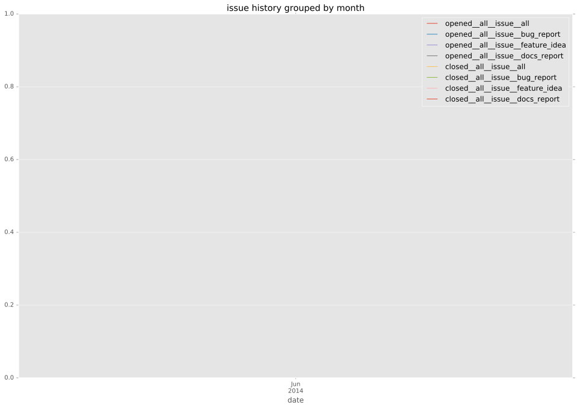
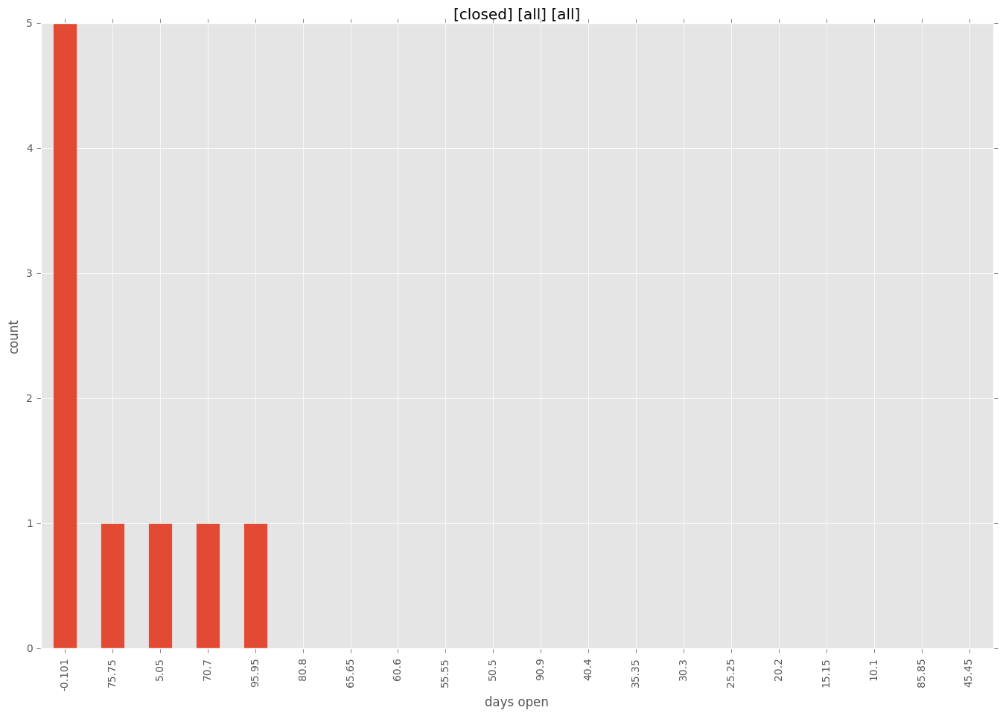
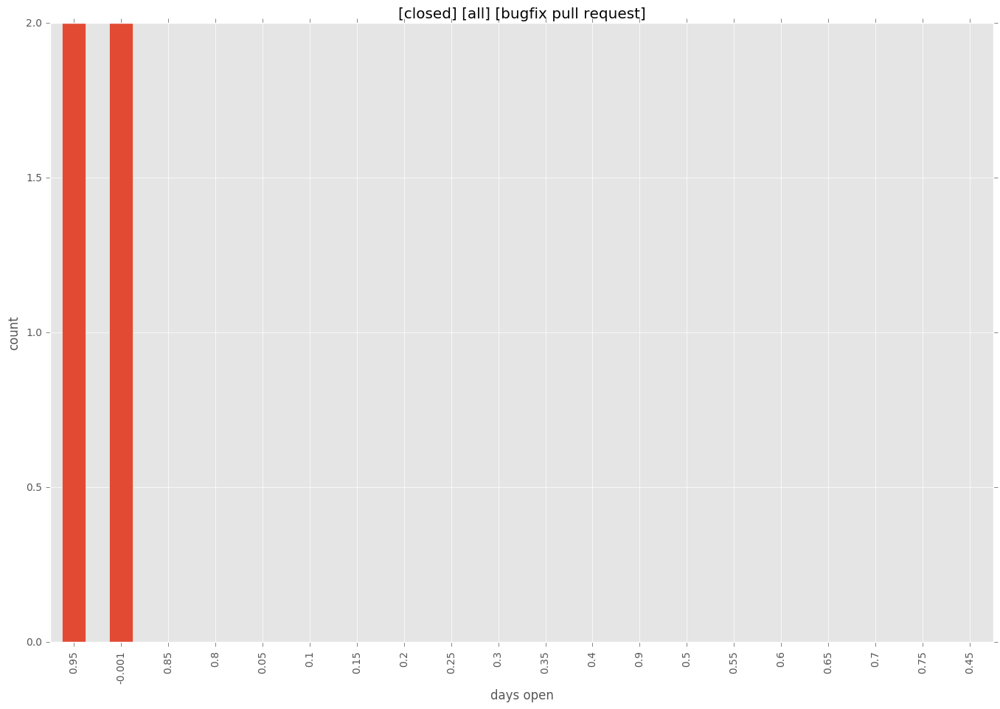
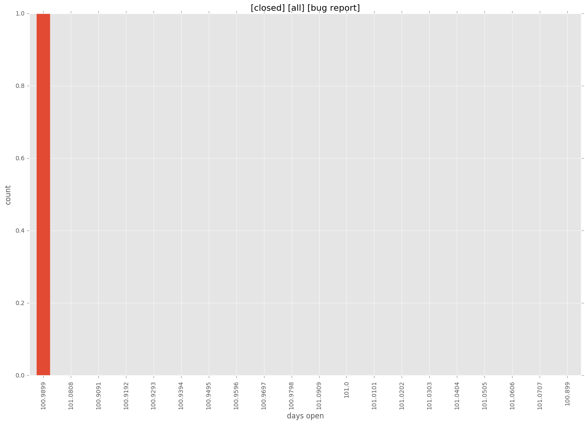
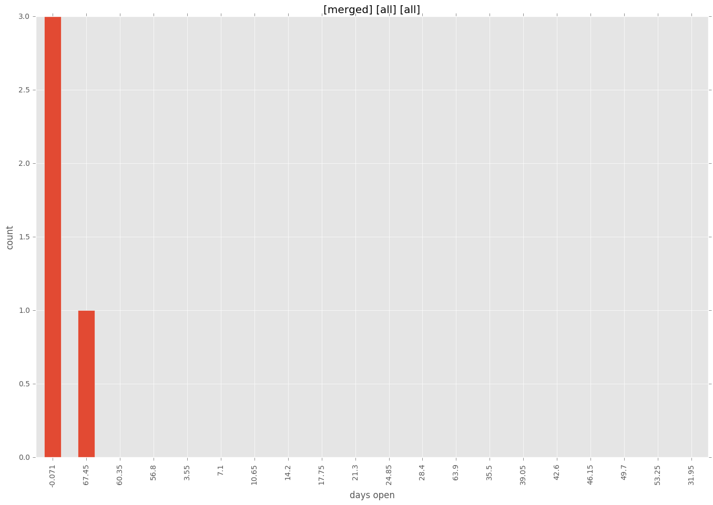
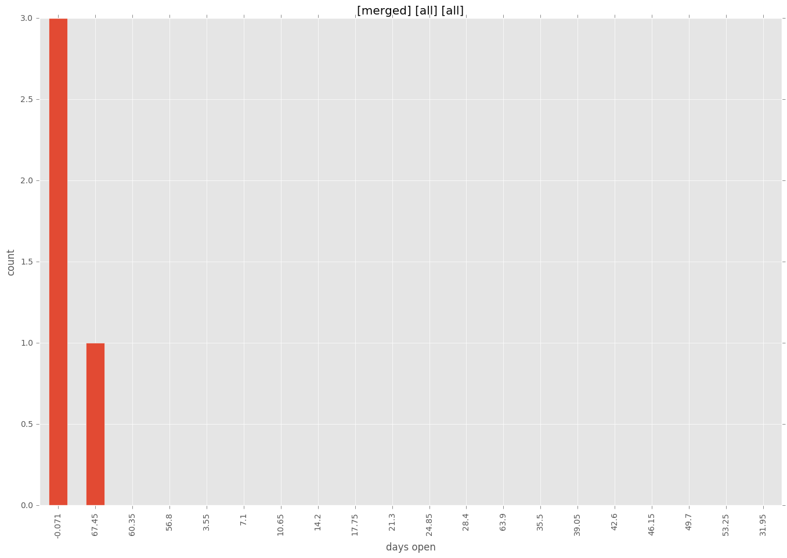

total issue counts
bugfix pull request: 4
feature pull request: 4
pullrequest: 8
issue: 1
bug report: 1
issue history

days open by issue type
feature pull request
count: 6
std: 38.4950213231
min: 0
max: 76
median: 39.5
mean: 37.6666666667
all
count: 13
std: 38.4589358094
min: 0
max: 101
median: 1.0
mean: 25.3846153846
pullrequest
count: 0
std: nan
min: nan
max: nan
median: nan
mean: nan
bugfix pull request
count: 6
std: 0.547722557505
min: 0
max: 1
median: 0.5
mean: 0.5
issue
count: 0
std: nan
min: nan
max: nan
median: nan
mean: nan
bug report
count: 1
std: nan
min: 101
max: 101
median: 101.0
mean: 101.0
closures grouped by total days open




 
